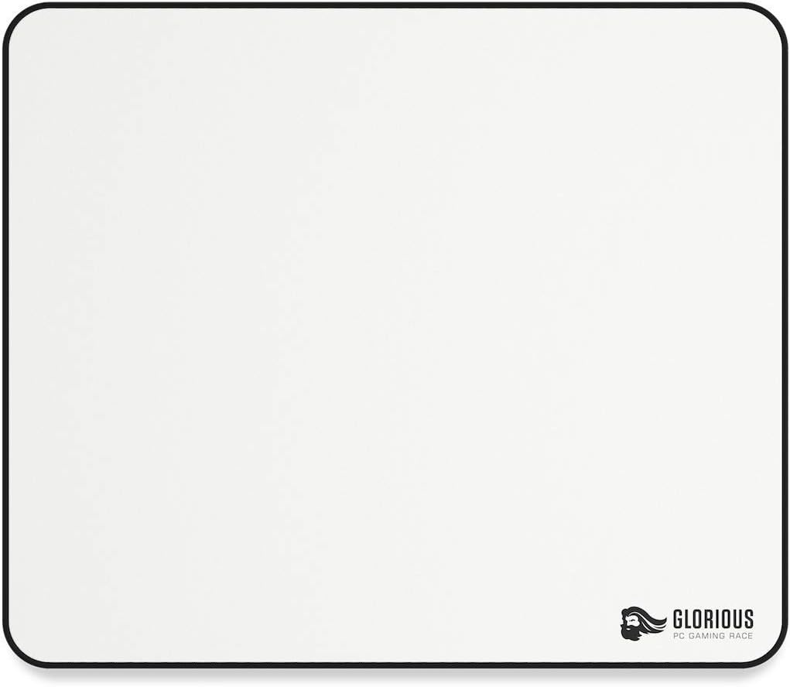

<!DOCTYPE html>

<html lang="en" xmlns="http://www.w3.org/1999/xhtml">
</html>
<head>
    <script>
        function preLoad() {
            a1 = new Image; a1.src = '../img/redpad.png';
            a2 = new Image; a2.src = '../img/blackpad.png';
            a3 = new Image; a3.src = '../img/bluepad.png';
            a4 = new Image; a4.src = '../img/pinkpad.png';
            a5 = new Image; a5.src = '../img/whitepad.png';
        }
        function im(image) {
            document.getElementById(image[0]).src = eval(image + ".src")
        }
    </script>
</head>

<body onLoad="preLoad()">
    <form autocomplete="off">
        <input type="radio" name="1" onClick="im('a1');" checked>
        <input type="radio" name="1" onClick="im('a2');">
        <input type="radio" name="1" onClick="im('a3');">
        <input type="radio" name="1" onClick="im('a4');">
        <input type="radio" name="1" onClick="im('a5');">
    </form>
    
</body>
<div class="header">
    <div class="header-right">
        <a class="active" href="#home">Home</a>
        <a href="file:///C:/Users/rkgib075/Desktop/sy23-24/My%20site/src/AboutUs.html">About</a>
    </div>
</div>
<head>
    <meta charset="UTF-8">
    <meta name="viewport" content="width=device-width, initial-scale=1.0">
    <title>Product Page</title>
    <style>
        body {
            font-family: Arial, sans-serif;
            margin: 0;
            padding: 0;
        }

        .container {
            max-width: 800px;
            margin: 0 auto;
            padding: 20px;
        }

        .product {
            border: 1px solid #ccc;
            padding: 20px;
            margin-bottom: 20px;
        }

            .product img {
                max-width: 100%;
                height: auto;
            }

            .product h2 {
                margin-top: 0;
            }

            .product p {
                margin-bottom: 10px;
            }

        .buy-button {
            background-color: #4CAF50;
            border: none;
            color: white;
            padding: 15px 32px;
            text-align: center;
            text-decoration: none;
            display: inline-block;
            font-size: 16px;
            margin: 4px 2px;
            cursor: pointer;
            border-radius: 8px;
        }
    </style>
</head>
<body>

    <div class="container">
        <div class="product">
            
            <h2>Mousepad</h2>
            <p>Description:This is the best mousepad in the market right now!</p>
            <p>Price: $20.00</p>
            <button class="buy-button">Buy Now</button>
        </div>
    </div>


<!DOCTYPE html>
<html lang="en">
<head>
    <meta charset="UTF-8">
    <meta name="viewport" content="width=device-width, initial-scale=1.0">
    <title>About Us</title>
    <style>
        body {
            font-family: Arial, sans-serif;
            margin: 0;
            padding: 0;
            background-color: #f5f5f5;
        }

        header {
            background-color: #333;
            color: #fff;
            padding: 20px;
            text-align: center;
        }

        .container {
            max-width: 800px;
            margin: 0 auto;
            padding: 20px;
            background-color: #fff;
            box-shadow: 0px 0px 10px rgba(0, 0, 0, 0.1);
            border-radius: 5px;
            margin-top: 20px;
        }

        h1 {
            margin-top: 0;
        }

        p {
            line-height: 1.6;
        }

        nav {
            text-align: center;
            margin-bottom: 20px;
        }

            nav a {
                color: #fff;
                text-decoration: none;
                padding: 10px 20px;
                border-radius: 5px;
                background-color: #555;
                transition: background-color 0.3s ease;
            }

                nav a:hover {
                    background-color: #777;
                }
    </style>
</head>
<body>

    <header>
        <h1>About Us</h1>
        <nav>
            <a href="../src/Home.html">Home</a>
            <a href="../src/Cart.html">Cart</a>
        </nav>
    </header>

    <div class="container">
        <h2>Our Company</h2>
        <p>
            RC Custom Mousepads is not just a company; it's a creative hub where innovation meets individuality. Founded on the belief that every desk deserves a touch of personalization, we specialize in crafting custom mousepads that reflect our customers' unique styles and passions.
            <br />
            <br />
            Driven by Passion:
            At RC Custom Mousepads, passion is at the core of everything we do. Our journey began with a simple idea – to transform the ordinary mousepad into a canvas for self-expression. Fueled by a love for design and a commitment to quality, we've grown into a trusted name in the custom merchandise industry.
            <br />
            <br />
            Craftsmanship and Quality:
            Craftsmanship is the hallmark of RC Custom Mousepads. From the initial design concept to the finished product, we uphold the highest standards of quality at every step of the process. Using state-of-the-art printing technology and premium materials, we ensure that each mousepad is not only visually striking but also durable and long-lasting.
            <br />
            <br />
            Empowering Creativity:
            At the heart of our mission is the desire to empower creativity. We believe that self-expression is a powerful tool for personal and professional growth. That's why we offer a wide range of customization options, allowing our customers to bring their ideas to life and make their desks truly their own.
            <br />
            <br />
            Commitment to Customer Satisfaction:
            Customer satisfaction is our top priority at RC Custom Mousepads. We're dedicated to providing an exceptional experience from start to finish, whether it's assisting with design choices, offering expert advice, or ensuring prompt delivery. Our friendly and knowledgeable team is always here to help, because we believe that every customer deserves to feel valued and heard.
            <br />
            <br />
            Building a Community:
            Beyond selling custom mousepads, we're building a community of like-minded individuals who share our passion for creativity and self-expression. Through engaging content, interactive events, and collaborative projects, we're fostering connections and inspiring others to unleash their creativity in new and exciting ways.
            <br />
            <br />
            Looking to the Future:
            As we continue to grow and evolve, our commitment to innovation remains unwavering. We're constantly exploring new ideas, technologies, and partnerships to expand our product offerings and reach new audiences. With a forward-thinking mindset and a dedication to excellence, we're excited to see what the future holds for RC Custom Mousepads.
            <br />
            <br />
            Join us on our journey to redefine mousepad customization and make your desk a reflection of who you are. Welcome to RC Custom Mousepads – where creativity knows no bounds.
        </p>
        <h2>Our Mission</h2>
        <p>
            At RC Custom Mousepads, our mission is simple yet profound: to empower individuals to express themselves through personalized products that enhance their workspace and inspire creativity.
            <br />
            <br />
            Unleashing Creativity:
            We believe that creativity knows no bounds. Our mission is to provide a platform for self-expression, where individuals can unleash their imagination and bring their ideas to life. Whether it's through vibrant colors, bold designs, or meaningful imagery, we're here to help our customers make their mark on the world.
            <br />
            <br />
            Enhancing Workspaces:
            A workspace is more than just a place to work – it's a reflection of who we are and what we stand for. That's why we're dedicated to creating custom mousepads that not only add a pop of personality to any desk but also enhance productivity and inspiration. By infusing creativity into the everyday, we're transforming workspaces into havens of inspiration and innovation.
            <br />
            <br />
            Fostering Connection:
            At RC Custom Mousepads, we believe in the power of connection. Our mission extends beyond selling products; it's about building a community of like-minded individuals who share a passion for creativity and self-expression. Through our products, events, and online platforms, we're fostering connections, sparking conversations, and inspiring others to embrace their unique voice.
            <br />
            <br />
            Promoting Sustainability:
            As stewards of the environment, we're committed to sustainability in everything we do. From sourcing eco-friendly materials to minimizing waste in our production processes, we're dedicated to reducing our environmental footprint and protecting the planet for future generations. Our mission is to create products that not only look good but also do good for the world around us.
            <br />
            <br />
            Delivering Excellence:
            Excellence is the cornerstone of our mission at RC Custom Mousepads. From the quality of our products to the level of customer service we provide, we strive for excellence in every aspect of our business. Our mission is to exceed expectations, delight our customers, and leave a lasting impression with every interaction.
            <br />
            <br />
            Looking Ahead:
            As we continue on our mission to empower creativity and self-expression, we're excited for the journey ahead. With innovation as our guide and our customers as our inspiration, we're committed to pushing the boundaries of customization and redefining what it means to personalize your workspace. Join us as we embark on this mission to make every desk a canvas for creativity.
        </p>
        <h2>Our Team</h2>
        <p>
            At RC Custom Mousepads, our team is a diverse group of talented individuals brought together by a shared passion for creativity and innovation. Each member plays a crucial role in our mission to deliver high-quality custom mousepads that reflect our customers' unique styles and personalities.
            <br />
            <br />
            Creative Minds:
            Our team is filled with creative minds who are constantly pushing the boundaries of design. From graphic artists to digital illustrators, they bring imagination and artistry to every mousepad they create. With a keen eye for detail and a commitment to quality, they ensure that each design is not only visually stunning but also functional and durable.
            <br />
            <br />
            Production Wizards:
            Behind the scenes, our production team works tirelessly to bring these designs to life. With precision and skill, they transform raw materials into custom mousepads that exceed our customers' expectations. From cutting and printing to packaging and shipping, they handle every step of the process with care and expertise.
            <br />
            <br />
            Customer Champions:
            At the heart of our company is our dedicated customer service team. Friendly, knowledgeable, and always ready to assist, they provide personalized support to ensure a seamless experience for our customers. Whether it's answering questions, resolving issues, or offering design advice, they go above and beyond to make every interaction memorable.
            <br />
            <br />
            Innovators and Dreamers:
            Above all, our team is made up of innovators and dreamers who are passionate about what they do. They're constantly seeking new ways to improve our products and processes, staying ahead of trends and technologies in the industry. With a shared commitment to excellence and a drive to succeed, they're the driving force behind RC Custom Mousepads' success.
            <br />
            <br />
            Together, we're more than just a team – we're a family united by our love for creativity, craftsmanship, and customer satisfaction. With each custom mousepad we create, we strive to make a lasting impression and bring joy to our customers' lives.

        </p>
    </div>

</body>
</html>
